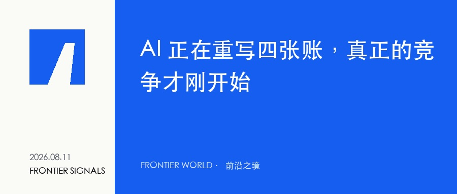

FRONTIER SIGNALS · 2026.08.11
AI 正在重写四张账，真正的竞争才刚开始
模型越来越便宜，资本越来越重，估值越来越高，创作者的门槛却越来越陡。看似分散的四条新闻，其实指向同一个变化。

今天的 AI 新闻很像四本互不相干的账簿：Anthropic 在算模型调用的单价，英伟达在算基础设施需要多少资本，OpenAI 在算一家 AI 公司究竟值多少钱，YouTube 则在重新计算创作者要付出多少注意力，才有资格开始赚钱。
把它们叠在一起看，会出现一个比“谁又发布了新模型”更重要的信号：AI 产业正在从能力竞赛，进入成本结构、资本结构和分配结构同时重写的阶段。技术仍然重要，但决定下一轮胜负的，越来越不是单点能力，而是谁能把更便宜的智能、更昂贵的基础设施和更稀缺的分发入口组织成一门可持续的生意。
开篇来源 1 · 2 · 3 · 4 · 5 · 6
01 / FRONTIER SIGNALS
模型降价，不只是价格战
Anthropic 宣布，Claude Sonnet 5 将长期保留每百万输入 token 2 美元、输出 token 10 美元的首发价，并取消原定的涨价计划。对普通用户来说，这只是一个价格数字；对真正把模型接进业务流程的人来说，它改变的是自动化的经济边界。
当一次调用足够便宜，过去只能偶尔使用的能力，会变成可以持续运行的基础设施。内容团队可以让 Agent 常驻追踪选题，创业公司可以给每个客户配一层自动化服务，个人也可以把资料整理、研究和复盘做成每天后台执行的流程。
所以，模型降价的后果并不是大家省下一点 API 费用，而是大量原本“不值得自动化”的小任务开始值得自动化。真正受益的不会只是调用量最大的公司，而是那些最早把便宜智能嵌进具体流程的人。
当智能的边际成本继续下降，竞争优势会从“拥有模型”转向“拥有高频、稳定、能产生结果的工作流”。
本节来源 1
02 / FRONTIER SIGNALS
算力越来越像一种金融资产
另一边，AI 的物理成本正在变得前所未有地重。Financial Times 报道称，英伟达正与 Apollo、BlackRock、Blackstone、Brookfield、高盛和 KKR 等机构筹划规模达 5,000 亿美元的 AI 基础设施融资方案。
这件事的意义不只是“数据中心还要继续扩张”。当私募、资管、投行和基础设施基金一起进入，算力已经不再只是科技公司的资本开支，而是在被包装成一种新的长期资产：它需要融资、期限管理、现金流预测，也需要回答产能会不会过剩、需求能不能兑现。
AI 因此出现了一个鲜明的双重结构：上层的软件智能越来越便宜，底层的电力、芯片、土地和数据中心却越来越昂贵。软件端的低价，恰恰依赖硬件端更大规模、更长期限的资本投入。

我们看到的“更便宜的 AI”，背后是越来越金融化、越来越重资产的基础设施。
本节来源 2 · 3
03 / FRONTIER SIGNALS
估值和分发，正在向头部集中
Bloomberg 报道称，OpenAI 以约 70 亿美元回购现任和前员工股份，交易估值达到 8,520 亿美元。巨额二级交易既是人才留存工具，也是在正式上市之前对市场流动性的一次测试。资本愿意为头部 AI 公司给出极高估值，因为它们同时掌握模型、用户入口和开发者生态。
但在内容分发的一端，平台并没有因为生产工具变便宜而降低门槛。YouTube 把新创作者的广告变现条件提高到过去一年 8,000 小时有效观看，或 90 天内 2,000 万次 Shorts 播放。生成内容更容易了，获得分发和收入却更难了。
这看起来矛盾，其实完全符合平台逻辑：当供给因 AI 而爆炸，注意力会变得更稀缺，平台就有更强的理由把收入集中给已经证明自己能留住用户的成熟供给。AI 降低的是生产门槛，不会自动降低信任门槛、分发门槛和商业化门槛。
内容会越来越多，但可信赖的名字、稳定的受众关系和可直接触达的渠道会越来越贵。
本节来源 4 · 5 · 6
04 / FRONTIER SIGNALS
个人和小团队，应该重算哪三笔账
对个人品牌、内容创业者和小团队来说，这一轮变化不意味着必须去训练模型，也不意味着要追逐每一个新工具。更现实的做法，是把自己的业务重新拆成三张账。
01 自动化账：哪些高频、重复但过去成本过高的任务，现在已经值得交给 Agent 常驻执行？
02 渠道账：除了平台推荐，你是否拥有可以反复触达的订阅、社群、网站、邮件或产品用户？
03 信任账：当内容供给无限增加，别人为什么仍然愿意相信你的判断，并为你的筛选、方法或服务付费？
本节来源 1 · 6
写在最后
AI 的下一阶段，表面上会继续表现为更强的模型、更大的融资和更激烈的平台竞争。但对大多数人而言，真正需要关注的不是每一条新闻，而是自己在这套新成本结构中的位置。
智能会继续变便宜，基础设施会继续吞噬资本，平台会继续提高优质流量的价格。夹在中间的人，如果只拥有生产能力，很容易被更低成本的供给替代；如果同时拥有独特判断、稳定关系和可复用流程，反而会得到前所未有的杠杆。
当模型变得像水电一样便宜，你真正应该自建的资产，究竟是更多内容，还是一套别人无法轻易复制的信任与分发系统？
结尾来源 1 · 3 · 5 · 6
参考资料
1. Anthropic · Claude Sonnet 5 pricing announcement
2. Financial Times · Nvidia AI infrastructure financing plan
4. Bloomberg · OpenAI employee share buyback
5. CNBC · OpenAI wraps $7 billion share sale ahead of potential IPO